Introduction
The first assignment involves creating a website that hosts my work (portfolio) for the course VÉL608G Modern manufacturing processes. Below, I describe the process of building the website using text and images, including how I chose a template and the key design decisions I made. I also explain what I hope to gain from the course and share my ideas for a possible final project. Finally, I describe how I uploaded the site to GitHub, what challenges came up, and how I solved them.
Preperation and research
To prepare for building the website, I first read the assignment description carefully and watched the YouTube tutorial videos provided for the project. I also reviewed the websites created by Sæmundur Guðmundsson (2022), Aron Dagur Beck (2023), and Aðalsteinn Ari Gunarsson (2024). Their work gave me a clear overview of how to approach the assignment and helped me form a rough idea of the layout and overall style I wanted for my own site. After that, I downloaded the recommended software and installed Brackets, a convenient code editor for languages such as HTML and CSS. I then created a GitHub account to be able to launch the website, and downloaded git Bash from Git to save the project to my repository.
Since I have little to no experience with HTML and CSS, I read the beginner guides on w3Schools and also got help from ChatGPT. After that, I watched youtube introductory videos on using Brackets and editing HTML websites:


Building the website
My design goals for a personal website were to create a clean, modern layout that keeps the focus on my projects, making it well suited for a portfolio. I also wanted the site to have smooth, easy scrolling between sections, a drop-down menu, and clear navigation, so it would be easy to organize content into sections and subpages such as Projects, a CV, and an introduction about myself. After gathering the necessary information and tools for the project, I explored different templates on html5up.net. Ultimately, I chose the Landed template because it fits my portfolio needs well and matches my design goals. Then I downloaded the template and opened index.html file in Brackets, where I began customizing and refining the website to match my requirements.
Customizing the website to my requirements
First, after opening the index.html file in Brackets,I changed the main display of home page, changing the title to my name, the main banner, and other texts.
Creating and deleting unwanted sections and pages
To create subpages for each assignment under the main page (VÉL608G Assignments), I used the template’s generic.html file as a starting point. I copied it into my project folder 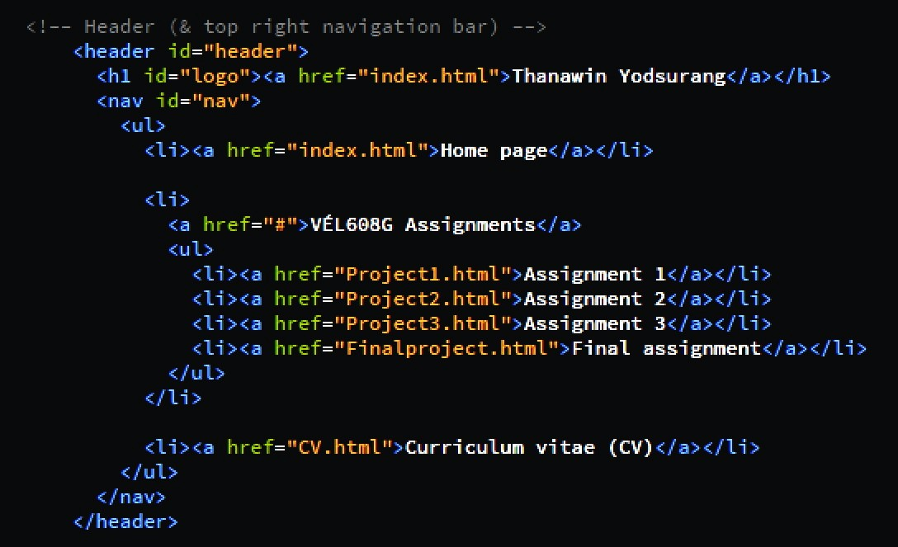(website_portfolio) and renamed each copy to Project1.html, Project2.html, and so on. I then linked these pages from index.html by updating the drop-down menu and the “Learn More” buttons, so the pages can be accessed through the top-right navigation as well. Below, is how the code for the header and top-right navigation bar looked like:
Here is the new look of the top-right navigation bar:
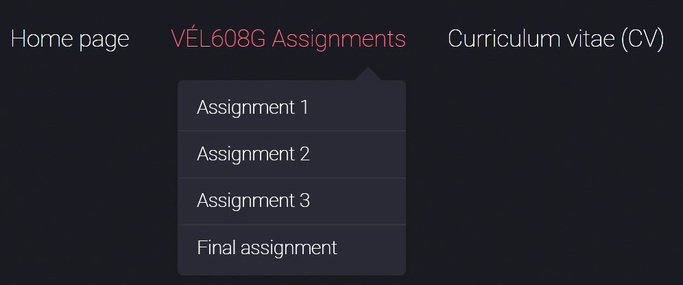
I enabled the “Next” arrows on the home page by giving each 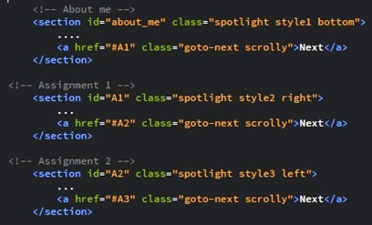<section> in the index.html file a unique
id (e.g., A1, A2) and linking each arrow to the next section using
href="#A2" and the goto-next scrolly classes. This makes the page scroll smoothly to
the section below. The image shows how three sections are linked.
Here is the new look of the top-right navigation bar:
I removed sections and elements that I felt were unnecessary, such as the Sign-Up button in the top-right corner and the “Get Started” email sign-up banner at the bottom of the home page.
The footer
I kept the main social/contact icons in the footer: Facebook, LinkedIn, GitHub, and email, and linked each icon to the correct destination on every page. In addition, I added a “Get in contact” heading above the icons along with my phone number and email address. I used the same icon syntax that the Landed template already includes, and I also used W3Schools and ChatGPT for guidance on linking and styling the social media buttons. The following images show part of the footer code and how the footer appears on the website:
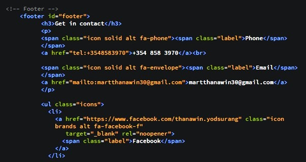 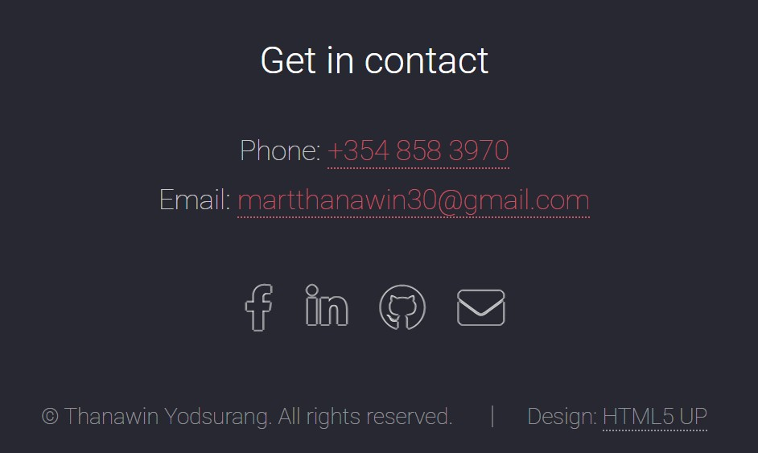
Adding the CV and displaying as a pdf file
To add my CV, I first renamed the 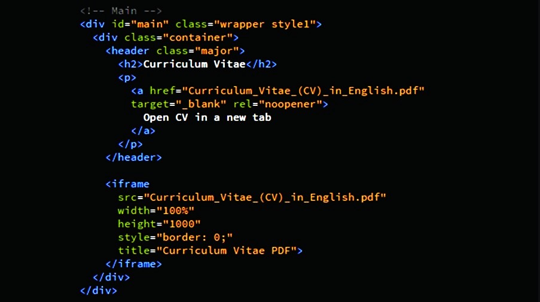elements.html file to CV.html and removed the original placeholder content. My goal was to display the CV as a PDF directly on the page, so I used ChatGPT for guidance on embedding a PDF in HTML. The final CV page includes an embedded PDF viewer and a link that opens the document in a new browser tab. To display the PDF file of the CV within the embedded page frame I used the <iframe> tag: The main embed code of the CV page looks like this:
The CV page currently has this look:
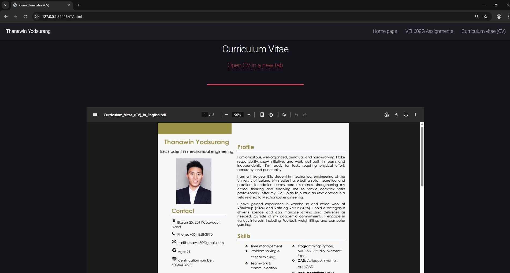
Editing texts
To learn how to edit the text, I located the relevant content sections in the HTML files and compared them
with how they appeared on the website. I found that paragraphs are written using the
<p>...</p> tag, and headings are written using
<h1>...</h1>, <h2>...</h2>, and so on.
The number in the heading tag indicates the heading level, ranging from 1 (largest) to 6 (smallest).
In addition, I learned that the visible content of a webpage is placed inside the
<body>...</body> tag. Within the body, the template organizes content into blocks using
<section> and <div> elements. A
<section> typically represents a meaningful part of the page (for instance, an “Introduction”
or “Building the website” section), while a <div> is a more general-purpose container used
to group elements together for layout and styling with CSS. I used the <code> element to highlight HTML tags and other key terms that I wanted to emphasize in the texts. To display code in a framed code block, I used the <pre><code>...</code></pre> tag.
Other useful HTML text-formatting elements can be found on the W3Schools page on
HTML Formatting.
Below is a list of a few examples:
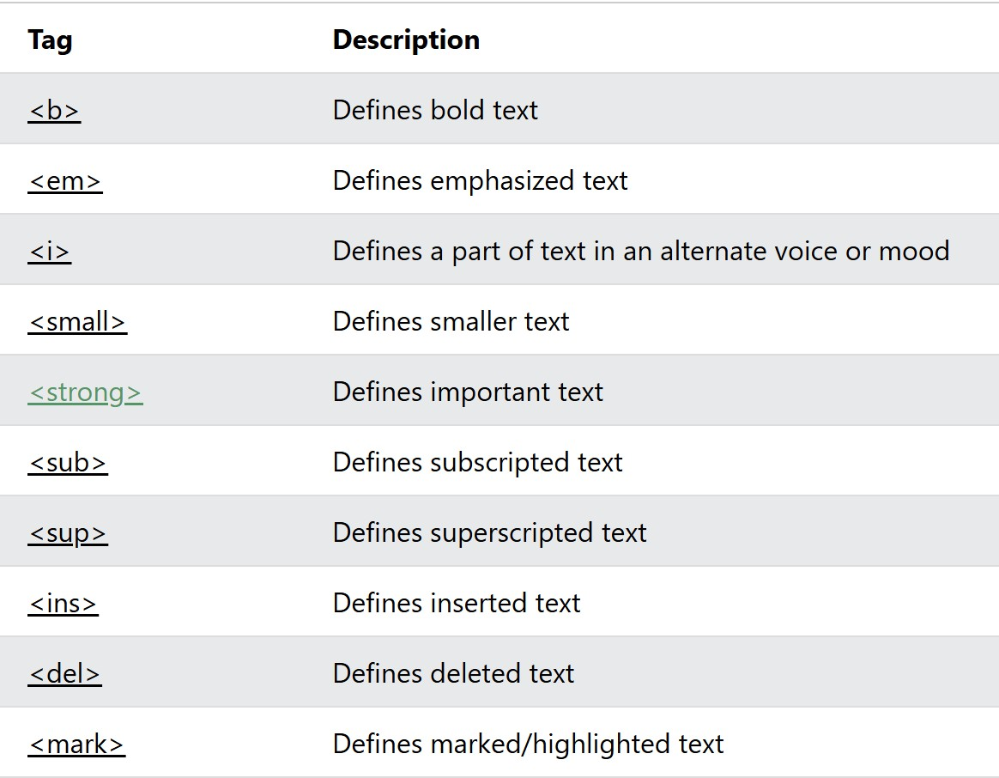
Adding links
To add links within a text, I learned (with help from ChatGPT) that a simple and convenient way to include and
display a hyperlink to another website is to use the anchor tag 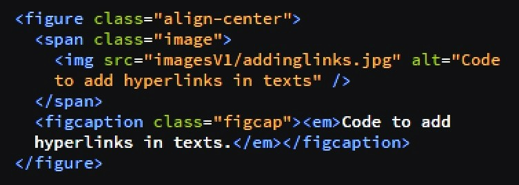<a> together with the
href (hypertext reference) attribute, which specifies the destination URL or location. The code is
the following:
Displaying images and videos
To display JPG images with captions, I asked ChatGPT for a convenient approach and used the following HTML syntax together with template classes to control alignment and ensure the images scale correctly on the page.
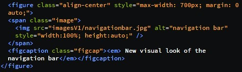
style="max-width: 700px; margin: 0 auto;"
style="width:100%; height:auto;"
To embed YouTube videos, I used the Share, then Embed option on YouTube, copied the provided HTML code, and pasted it into my website file. However, the embedded player consistently showed a video player configuration error (Error 153), even after trying several different troubleshooting methods. As a workaround, I included direct links to the videos instead.
Styling the website with CSS
I wanted to adjust image sizes and change the colours of buttons and sections on the website. I felt it would be easier to make these changes using CSS, so I used tutorials on w3Schools/css/default
and also got assistance from ChatGPT. For example, I modified the frame and size of my profile picture in the banner on the home page by editing the main.css file. While working in the stylesheet, I learned several useful CSS styling rules and noticed that the template’s CSS is organized into different IDs, each containing multiple classes for styling specific elements. In the image below, we can see a CSS selector where #banner is an ID selector and .content and .image are class selectors. This rule targets elements with the class image inside an element with the class content, within the section that has the ID banner.
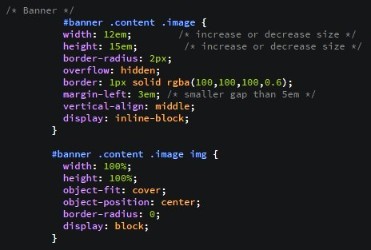
Uploading files to GitHub and publishing the website
After completing most of the website design, I began uploading the files to GitHub using Git Bash and then publishing the site. First, I created a new public repository on GitHub called Website_MTY. Next, I navigated to the folder containing my website files, right clicked inside the folder, and opened Git Bash. The image below shows this step:
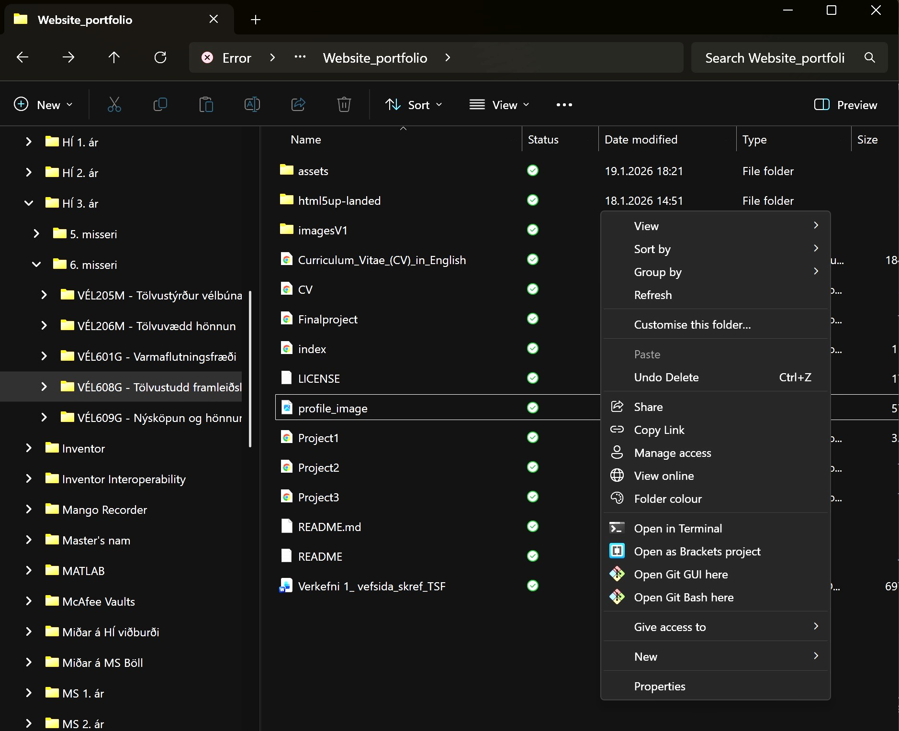
Then I followed GitHub’s instructions for uploading a local website directory to a repository using the following Git commands:
echo "Website_MTY" >> README.md
git init
git add README.md
git commit -m "first commit"
git branch -N main
git remote add origin https://github.com/martthanawin30/Website_MTY.git
git push -u origin main
I entered the commands in the Git Bash terminal, but I encountered an “Author identity unknown” error, which later led to the message “src refspec main does not match any.” As you can see down below:
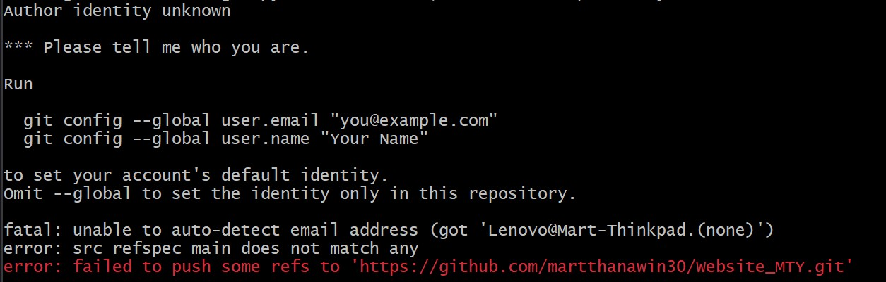<git commit> and successfully upload the files to GitHub using <git push>
git config --global user.name "Thanawin Yodsurang"
git config --global user.email "martthanawin30@gmail.com"
git commit -m "Initial commit"
git push -u origin main
The message “Your branch is up to date with 'origin/main'” confirmed that my local repository was synchronized with GitHub. I was therefore able to successfully upload my website files to the repository. To publish the website, I went to Settings -> Pages, selected the main branch and the root folder, and saved the changes. After a short moment, GitHub Pages generated the public URL for the site (it appeared after refreshing the Pages settings).
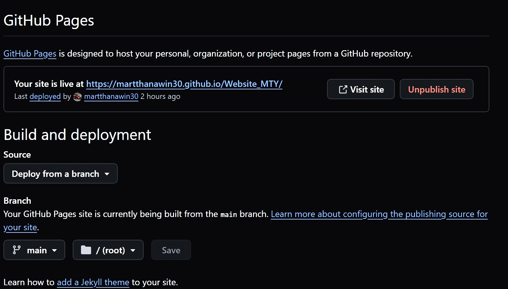<git add. >, <git commit -m "Update website">, <git push>. Here is the link to my GitHub repository, which can also be found by clicking on the GitHub icon in the footer of every page.